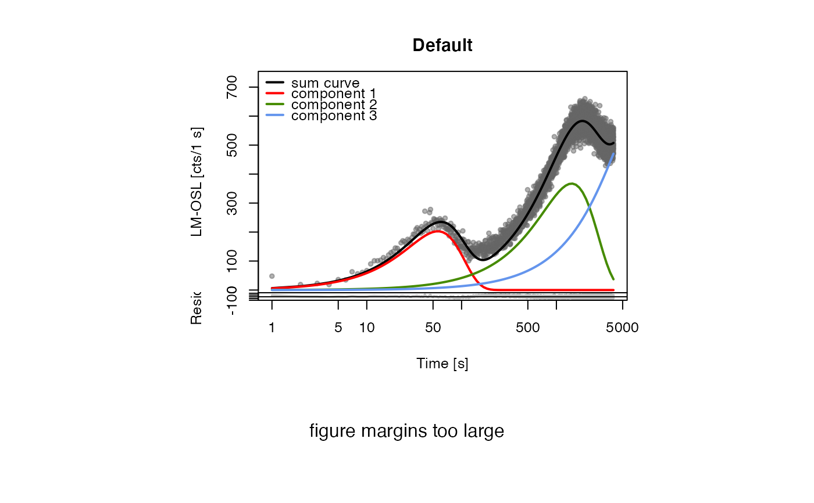
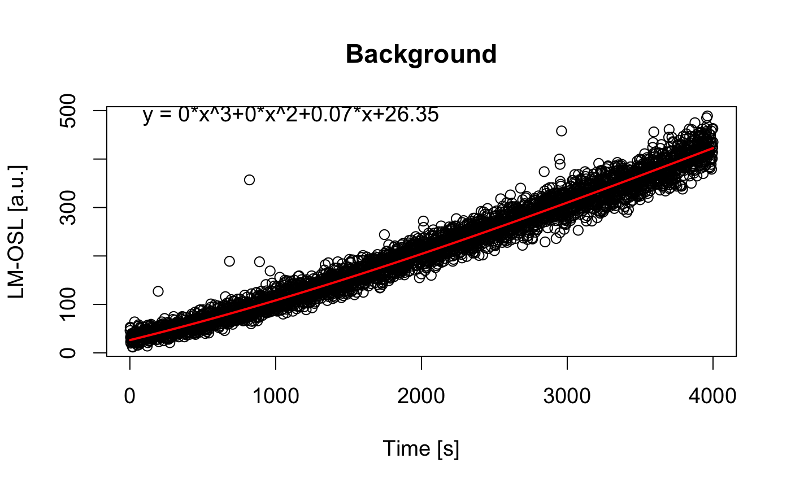
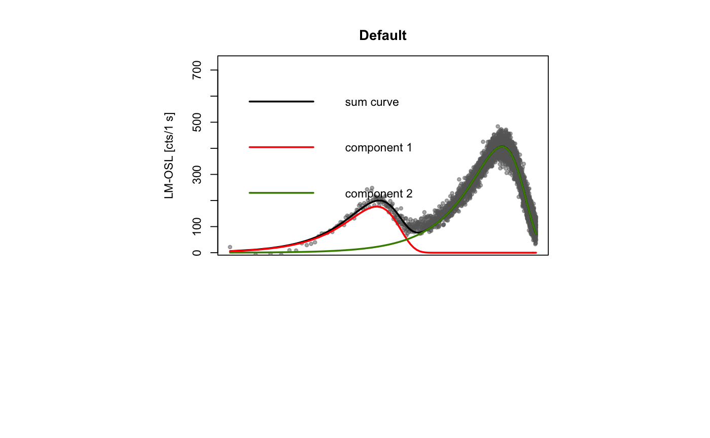
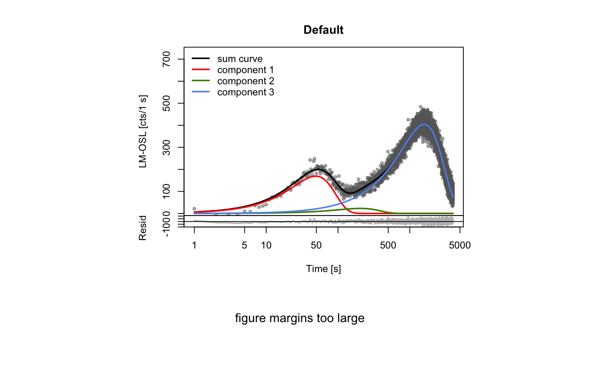

fit_LMCurve.RdThe function determines weighted nonlinear least-squares estimates of the
component parameters of an LM-OSL curve (Bulur 1996) for a given number of
components and returns various component parameters. The fitting procedure
uses the function nls with the port algorithm.
fit_LMCurve(values, values.bg, n.components = 3, start_values, input.dataType = "LM", fit.method = "port", sample_code = "", sample_ID = "", LED.power = 36, LED.wavelength = 470, fit.trace = FALSE, fit.advanced = FALSE, fit.calcError = FALSE, bg.subtraction = "polynomial", verbose = TRUE, plot = TRUE, plot.BG = FALSE, ...)
| values | RLum.Data.Curve or data.frame (required): x,y data of measured values (time and counts). See examples. |
|---|---|
| values.bg | RLum.Data.Curve or data.frame (optional): x,y data of measured values (time and counts) for background subtraction. |
| n.components | integer (with default): fixed number of components that are to be recognised during fitting (min = 1, max = 7). |
| start_values | data.frame (optional): start parameters for lm and xm data for the fit. If no start values are given, an automatic start value estimation is attempted (see details). |
| input.dataType | character (with default): alter the plot output depending on the input data: "LM" or "pLM" (pseudo-LM). See: CW2pLM |
| fit.method | character (with default):
select fit method, allowed values: |
| sample_code | character (optional): sample code used for the plot and the optional output table (mtext). |
| sample_ID | character (optional): additional identifier used as column header for the table output. |
| LED.power | numeric (with default): LED power (max.) used forintensity ramping in mW/cm^2. Note: This value is used for the calculation of the absolute photoionisation cross section. |
| LED.wavelength | numeric (with default): LED wavelength in nm used for stimulation. Note: This value is used for the calculation of the absolute photoionisation cross section. |
| fit.trace | logical (with default): traces the fitting process on the terminal. |
| fit.advanced | logical (with default):
enables advanced fitting attempt for automatic start parameter recognition.
Works only if no start parameters are provided.
Note: It may take a while and it is not compatible with |
| fit.calcError | logical (with default): calculate 1-sigma error range of components using confint. |
| bg.subtraction | character (with default):
specifies method for background subtraction ( |
| verbose | logical (with default): terminal output with fitting results. |
| plot | logical (with default): returns a plot of the fitted curves. |
| plot.BG | logical (with default): returns a plot of the background values with the fit used for the background subtraction. |
| ... | Further arguments that may be passed to the plot output, e.g.
|
Various types of plots are returned. For details see above. Furthermore an
RLum.Results object is returned with the following structure:
@data:
.. $data : data.frame with fitting results
.. $fit : nls (nls object)
.. $component.contribution.matrix : list component distribution matrix
info:
.. $call : call the original function call
Matrix structure for the distribution matrix:
Column 1 and 2: time and rev(time) values
Additional columns are used for the components, two for each component,
containing I0 and n0. The last columns cont. provide information on
the relative component contribution for each time interval including the row
sum for this values.
Fitting function
The function for the fitting has the general form:
$$y = (exp(0.5)*Im_1*x/xm_1)*exp(-x^2/(2*xm_1^2)) + ,\ldots, + exp(0.5)*Im_i*x/xm_i)*exp(-x^2/(2*xm_i^2))$$
where \(1 < i < 8\)
This function and the equations for the conversion to b (detrapping probability) and n0 (proportional to initially trapped charge) have been taken from Kitis et al. (2008):
$$xm_i=\sqrt{max(t)/b_i}$$ $$Im_i=exp(-0.5)n0/xm_i$$
Background subtraction
Three methods for background subtraction
are provided for a given background signal (values.bg).
polynomial: default method. A polynomial function is fitted using glm
and the resulting function is used for background subtraction:
$$y = a*x^4 + b*x^3 + c*x^2 + d*x + e$$
linear: a linear function is fitted using glm and the resulting function
is used for background subtraction:
$$y = a*x + b$$
channel: the measured
background signal is subtracted channelwise from the measured signal.
Start values
The choice of the initial parameters for the nls-fitting is a crucial
point and the fitting procedure may mainly fail due to ill chosen start
parameters. Here, three options are provided:
(a)
If no start values (start_values) are provided by the user, a cheap guess is made
by using the detrapping values found by Jain et al. (2003) for quartz for a
maximum of 7 components. Based on these values, the pseudo start parameters
xm and Im are recalculated for the given data set. In all cases, the fitting
starts with the ultra-fast component and (depending on n.components)
steps through the following values. If no fit could be achieved, an error
plot (for plot = TRUE) with the pseudo curve (based on the
pseudo start parameters) is provided. This may give the opportunity to
identify appropriate start parameters visually.
(b) If start values are provided, the function works like a simple nls fitting approach.
(c)
If no start parameters are provided and
the option fit.advanced = TRUE is chosen, an advanced start paramter
estimation is applied using a stochastical attempt. Therefore, the
recalculated start parameters (a) are used to construct a normal
distribution. The start parameters are then sampled randomly from this
distribution. A maximum of 100 attempts will be made. Note: This
process may be time consuming.
Goodness of fit
The goodness of the fit is given by a pseudoR^2 value (pseudo coefficient of determination). According to Lave (1970), the value is calculated as:
$$pseudoR^2 = 1 - RSS/TSS$$
where \(RSS = Residual~Sum~of~Squares\) and \(TSS = Total~Sum~of~Squares\)
Error of fitted component parameters
The 1-sigma error for the components is calculated using the function confint. Due to considerable calculation time, this option is deactived by default. In addition, the error for the components can be estimated by using internal R functions like summary. See the nls help page for more information.
For more details on the nonlinear regression in R, see Ritz & Streibig (2008).
The pseudo-R^2 may not be the best parameter to describe the goodness
of the fit. The trade off between the n.components and the pseudo-R^2
value currently remains unconsidered.
The function does not ensure that the fitting procedure has reached a global minimum rather than a local minimum! In any case of doubt, the use of manual start values is highly recommended.
0.3.2 (2018-01-21 17:22:38)
Kreutzer, S. (2018). fit_LMCurve(): Nonlinear Least Squares Fit for LM-OSL curves. Function version 0.3.2. In: Kreutzer, S., Burow, C., Dietze, M., Fuchs, M.C., Schmidt, C., Fischer, M., Friedrich, J. (2018). Luminescence: Comprehensive Luminescence Dating Data Analysis. R package version 0.9.0. https://CRAN.R-project.org/package=Luminescence
Bulur, E., 1996. An Alternative Technique For Optically Stimulated Luminescence (OSL) Experiment. Radiation Measurements, 26, 5, 701-709.
Jain, M., Murray, A.S., Boetter-Jensen, L., 2003. Characterisation of blue-light stimulated luminescence components in different quartz samples: implications for dose measurement. Radiation Measurements, 37 (4-5), 441-449.
Kitis, G. & Pagonis, V., 2008. Computerized curve deconvolution analysis for LM-OSL. Radiation Measurements, 43, 737-741.
Lave, C.A.T., 1970. The Demand for Urban Mass Transportation. The Review of Economics and Statistics, 52 (3), 320-323.
Ritz, C. & Streibig, J.C., 2008. Nonlinear Regression with R. R. Gentleman, K. Hornik, & G. Parmigiani, eds., Springer, p. 150.
fit_CWCurve, plot, nls, minpack.lm::nlsLM, get_RLum
##(1) fit LM data without background subtraction data(ExampleData.FittingLM, envir = environment()) fit_LMCurve(values = values.curve, n.components = 3, log = "x")#> #> [fit_LMCurve()] #> #> Fitting was done using a 3-component function: #> #> xm1 xm2 xm3 Im1 Im2 Im3 #> 56.18289 1449.72461 7878.25114 202.76634 367.30226 639.21354 #> #> (equation used for fitting according Kitis & Pagonis, 2008) #> ------------------------------------------------------------------------------ #> (1) Corresponding values according the equation in Bulur, 1996 for b and n0: #> #> b1 = 1.267219e+00 +/- NA #> n01 = 1.878223e+04 +/- NA #> #> b2 = 1.90322e-03 +/- NA #> n02 = 8.779229e+05 +/- NA #> #> b3 = 6.444665e-05 +/- NA #> n03 = 8.30277e+06 +/- NA #> #> cs from component.1 = 1.488e-17 cm^2 >> relative: 1 #> cs from component.2 = 2.234e-20 cm^2 >> relative: 0.0015 #> cs from component.3 = 7.566e-22 cm^2 >> relative: 1e-04 #> #> (stimulation intensity value used for calculation: 8.517726e+16 1/s 1/cm^2) #> (errors quoted as 1-sigma uncertainties) #> ------------------------------------------------------------------------------ #> #> pseudo-R^2 = 0.9557##(2) fit LM data with background subtraction and export as JPEG ## -alter file path for your preferred system ##jpeg(file = "~/Desktop/Fit_Output\%03d.jpg", quality = 100, ## height = 3000, width = 3000, res = 300) data(ExampleData.FittingLM, envir = environment()) fit_LMCurve(values = values.curve, values.bg = values.curveBG, n.components = 2, log = "x", plot.BG = TRUE)#> [fit_LMCurve] >> Background subtracted (method="polynomial")!#> #> [fit_LMCurve()] #> #> Fitting was done using a 2-component function: #> #> xm1 xm2 Im1 Im2 #> 53.32071 1587.57201 176.74408 406.89925 #> #> (equation used for fitting according Kitis & Pagonis, 2008) #> ------------------------------------------------------------------------------ #> (1) Corresponding values according the equation in Bulur, 1996 for b and n0: #> #> b1 = 1.406916e+00 +/- NA #> n01 = 1.553775e+04 +/- NA #> #> b2 = 1.587059e-03 +/- NA #> n02 = 1.065044e+06 +/- NA #> #> cs from component.1 = 1.652e-17 cm^2 >> relative: 1 #> cs from component.2 = 1.863e-20 cm^2 >> relative: 0.0011 #> #> (stimulation intensity value used for calculation: 8.517726e+16 1/s 1/cm^2) #> (errors quoted as 1-sigma uncertainties) #> ------------------------------------------------------------------------------ #> #> pseudo-R^2 = 0.9417##dev.off() ##(3) fit LM data with manual start parameters data(ExampleData.FittingLM, envir = environment()) fit_LMCurve(values = values.curve, values.bg = values.curveBG, n.components = 3, log = "x", start_values = data.frame(Im = c(170,25,400), xm = c(56,200,1500)))#> [fit_LMCurve] >> Background subtracted (method="polynomial")! #> #> [fit_LMCurve()] #> #> Fitting was done using a 3-component function: #> #> xm1 xm2 xm3 Im1 Im2 Im3 #> 49.00643 204.40082 1591.66448 169.44002 23.00741 405.46171 #> #> (equation used for fitting according Kitis & Pagonis, 2008) #> ------------------------------------------------------------------------------ #> (1) Corresponding values according the equation in Bulur, 1996 for b and n0: #> #> b1 = 1.665536e+00 +/- NA #> n01 = 1.36904e+04 +/- NA #> #> b2 = 9.574028e-02 +/- NA #> n02 = 7.753496e+03 +/- NA #> #> b3 = 1.578908e-03 +/- NA #> n03 = 1.064017e+06 +/- NA #> #> cs from component.1 = 1.955e-17 cm^2 >> relative: 1 #> cs from component.2 = 1.124e-18 cm^2 >> relative: 0.0575 #> cs from component.3 = 1.854e-20 cm^2 >> relative: 9e-04 #> #> (stimulation intensity value used for calculation: 8.517726e+16 1/s 1/cm^2) #> (errors quoted as 1-sigma uncertainties) #> ------------------------------------------------------------------------------ #> #> pseudo-R^2 = 0.9437